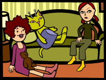
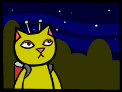
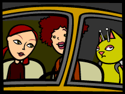
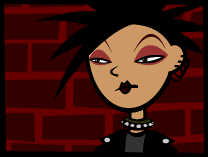
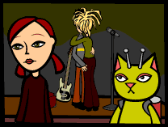

|
|

The question as to whether or not I would be invited to the show at Starky's
was settled thusly: the cover charge was $7. I was the only one with money
to spare. I did not mind paying for June and Paula, as the money is supplied
to me by the KSA as part of my work expenses.
Paula's father dropped her off at the LeBore home on his way to his bowling
match. She arrived with a sleeping bag and a stack of videocassettes.
At 9:00 PM, the girls changed into their sleeping attire. I set my Hypno-Façade
to accommodate this change (Paula complimented my pink pajamas), and we
all convened in the family room. Mrs. LeBore brought us some freshly popped
popcorn and a large plate of home made chocolate chip cookies. She also
supplied milk.
"You girls have fun now. Don't stay up too late or you'll be a mess in
the morning!"
This comment resulted in more eye rolling from June.
"Ma, it's a sleep over. You're supposed to stay up all night."
"All right. But you know how cranky you get when you're tired."
"That's OK, Mrs. LeBore. Me and Katerina will make sure she goes to bed
early. Then we'll stay up all night and watch videos!"
Mrs. LeBore chuckled as she walked out of the room. "Good night, girls."
"Night!"
The three of us listened as Mrs. LeBore padded up the stairs in her fuzzy
slippers. We heard the master bedroom door close with a soft click.
"We should probably wait a while before we go," June said. "I want to
be sure they're really asleep."
"Well, in the mean time," Paula held up two of the videocassettes she
brought. "What should it be? 'Heathers' or 'Beaches'?"
"'Beaches'? Are you kidding?" June said as she screwed up her face in
a mass of wrinkled nose and mouth. "'Heathers.'"
Two hours later June and Paula rushed around quietly, getting ready to
sneak out. Paula shook her hair out to even larger proportions, while
June applied lipstick the exact shade of dried human blood.
When
they completed preening, they tip-toed (shoeless) through the kitchen
and out the door. It was a cool, clear night. Some stars were visible
and I tried to locate the exact pinpoint of light from whence I came,
but the street lamps and air pollution obliterated much of the nighttime
universe. June and Paula quickly put on their shoes and proceeded to open
the garage door, a process which took approximately fifteen painstaking
minutes.
"Shhhh! Don't go too fast or they'll hear it!" June admonished.
"Uh..." Paula groaned. "Doesn't your dad ever oil this freaking thing?
It's, like, super rusty!"
"Shhh!" June hissed.
I walked to the end of the driveway and looked at the master bedroom window
where the LeBore's were sleeping peacefully. They had no idea what sort
of mischief was brewing down in their front yard.
The garage door was finally agape, and the girls crept into its musty
shadows. I followed. June handed Paula the keys she swiped off the key
rack in the kitchen. Paula opened the door, got in and then unlocked the
other door for June and me.
"I got dibs on front," June whispered to me.
When
we were all pleasantly situated, Paula put the key in the ignition and
paused. "What's this?" she said, placing her hand on the stick shift.
"And why are there three pedals?"
"It's a stick shift, Paula. You can drive stick, right? Please tell me
you can."
"Oh yeah, I did once, when I was learning. Peter, that guy I dated for
three weeks back in 11th grade, I think he had a stick. He drove a Mustang,
I think. Anyway, that had to be, like, the worst car to make out in. My
God! So cramped!"
"Paula."
"Oh, right. Maybe we could take your mom's car instead," Paula said, nodding
towards Mrs. LeBore's Autumn Orange Ford Explorer 4 door SUV.
"Are you kidding? She just got that car. It cost $30,000."
"But it's an automatic right?"
"Damn it Paula."
"It's your call, June."
"Let's just go. I don't want to sneak back in and get the other keys."
Paula turned the key and the garage was suddenly filled with the teeth
vibrating sound of grinding gears.
"Ooop! Sorry about that."
June turned a shade paler and clenched her jaw.
We jerked fitfully backwards down the driveway and proceeded down the
street. Paula's driving style was a cross between drunken teenager and
near sighted octogenarian.
"Whoo! I'm not used to driving a stick! This is hard! But I'll get a hang
of it soon. The next time, it will go a lot smoother."
"What next time?" June grumbled, her knuckles white and extended from
gripping the door and seat.
After about fifteen minutes of Paula's erratic driving we reached Starky's,
a rather bleak looking shack like edifice located in what I have since
discovered is called a "strip mall." A strip mall is basically a long
parking lot located right off a highway or road. Adjoining the parking
lot is a long line of stores, most of which are attached to one another.
Aside from the rundown Starky's, this particular strip mall consisted
of Dunkin' Donuts, Jimmy's Pizza Ristorante, Hollywood Video, Carlita's
Buns 'n Things, and Pudgies Famous Chicken.
The music coming out of Starky's was pounding. When the door opened, billows
of smoke poured out as if the place were ablaze. I'm glad I am not tall,
as the fresh air is located close to the ground.
A
young woman straight out of that punk rock movie "Sid & Nancy" manned
the door. I can't tell which was less welcoming, the mean looking spikes
on her dog collar or the offensive look on her face. She sneered as we
came closer and June whispered to Paula, "Is she gonna let us in or eat
us for dinner?"
"You just let me handle this," Paula whispered back. "Hey!" she said,
grinning at the dour looking gatekeeper. "We're here for the Rotten Goat
show. Nars, the drummer, is my cousin and he told me to tell whoever was
at the door what band we were here for so they could get paid. It's seven
bucks, right? I sure hope we brought enough money, heh heh."
I assumed this was my cue to present the cash, but before I could get
it out, a blasé voice intoned, "IDs?"
Paula laughed and June shifted from one foot to another. Digging through
her ample shoulder bag, Paula searched for the proof of age we all knew
she did not possess.
"It's in here somewhere... where is it? Wait, is that it? No, just my
library card. You know, I'm always losing things, I'm such an idiot!"
"So, you drove here with no license?"
"She must have if she can't find it." June said caustically to the woman
blocking our entrance.
Just then some tall men with sticker laden guitar cases walked by. One
of them stopped when he saw June.
"Hey, you're the girl I drove home from that party we played out in Massapequa!
What's up?"
June flushed slightly but quickly regained her composure.
"We're trying to get in, but the warden here won't let us."
"Awww, come on Sylvie, let 'm in. I'll keep and eye on them and make sure
they don't drink." He smiled at the improbably named Sylvie until she
relented and smiled back. I handed her $21 and we entered.
We followed the as of yet unnamed lead singer towards the small stage.
June walked along silently; she seemed not to know where to look. Paula
kept up a stream of nonsensical banter, which I fortunately could not
understand due to the loud music. The lead singer and his cohorts went
about setting up their instruments as Paula yelled, June stared and I
surveyed the scene. Starky's is a small venue, and I had no trouble scanning
the 54 occupants of the room with one sweeping glance. They were all much
older than June and Paula, although they were perhaps a little younger
than the Earth equivalent of my true age.
June stared intently at a green photocopied flyer she found on the floor.
It announced the opening act as having the unappealing name of "Meat Nipple."
Since we were watching the opening act set up just then, I felt safe to
assume they had thought up what is possibly the stupidest band name ever.
June did not agree with me though; I feel her ambivalence is due to her
thinly veiled esteem regarding the lead singer.
They finally set up their instruments and played a set of raucous music.
June raptly watched the lead singer as he bobbed up and down, fingered
his bass and screamed unintelligible lyrics into the microphone. Paula
ran around the bar, chatting loudly with whom ever would pretend to listen
to her.
Before starting their last song, the lead singer, sweaty from exertion,
looked out into the crowd and said, "This song is for a girl I know, she's
tough but sweet. I think you know who I'm talking about."
He seemed to be looking in June's direction, but I could not pinpoint
who it was he was seeking. June, on the other hand, turned crimson as
the second sun on Katatonia.
He
sang his song and when the last note died down a tall girl with blond
dreadlocks jumped up on stage and wrapped her self around him. She appeared
to be attempting to suck his lungs right out of his mouth. I tried to
catch June's eye, but she was too busy picking lint off the hem of her
dress to notice me. The blond girl grabbed the microphone and screeched,
"I love you, Tristan James!!"
So that must be his name. Rather odd.
June looked ready to leave, and I don't blame her, since the music was
not that good and the smoke level was quadruple what it was when we walked
in. We found Paula in a rapt conversation with a man wearing a heavy black
leather jacket adorned with spikes.
"So then I was like, "You destroyed my car!" And she was like, "Where
did you learn to drive, the bumper cars down on Coney Island? And then
I said –"
June interrupted her before we found out what she said. "Paula, we want
to leave."
"Now? It's just starting to get fun! Broken Gear is going on next! They
have the hottest drummer ever!"
We pulled Paula away from the burly leather clad man and left. I looked
back once and saw Tristan James and his blond attached at the face. June
stared stonily forward.
We walked back to the car, June and I remained silent as Paula chattered
away like a broken record.
We returned home without mishap.
|
|